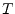
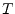

The ideal attenuator with (power) attenuation  is frequency
independent and the model is valid for DC and for AC simulation.
It is determined by the following Z parameters.
is frequency
independent and the model is valid for DC and for AC simulation.
It is determined by the following Z parameters.
| (9.72) |
| (9.73) |
The Z parameter representation is not very practical as new lines in the MNA matrix have to be added. More useful are the Y parameters.
| (9.74) |
Attenuator with (power) attenuation  , reference impedance
, reference impedance  and temperature :
and temperature :
| (9.75) |
The scattering parameters and noise wave correlation matrix of an
ideal attenuator with (power) attenuation  (loss) (or power gain
) in reference to the impedance
(loss) (or power gain
) in reference to the impedance  writes as follows.
writes as follows.
| (9.76) |
| (9.77) |
| (9.78) |
 |
(9.79) |